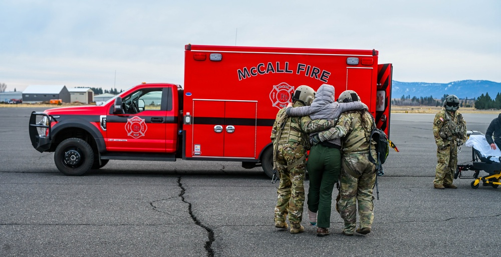

An Idaho Guard Black Hawk hoisted an injured hiker out of country no vehicle can reach
The Idaho Army National Guard said an HH-60 Black Hawk crew hoisted a 46-year-old woman with a broken ankle near Goose Creek Trail, southwest of Brundage Ski Resort, and flew her to McCall Airport. McCall Fire then took her to St. Luke's McCall Medical Center. Meadows Valley Fire and EMS Chief Doug Buys said the ground is so remote that even a dirt bike cannot get in, and that a previous rescue near the same spot took seven to eight hours. Riggins Emergency Medical Services also assisted. The Guard said this was the second remote rescue it has flown for that department in as many months, after a September hoist near Council Mountain. It operates the only hoist-capable helicopters in the state and has completed 17 search-and-rescue missions this year, four of them in October. New Meadows has fewer than 1,000 people and sits about 120 miles north of Boise.